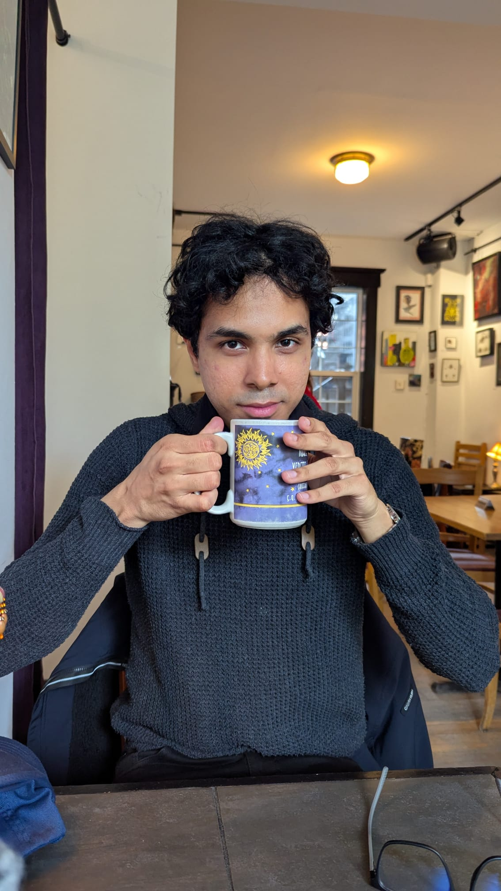
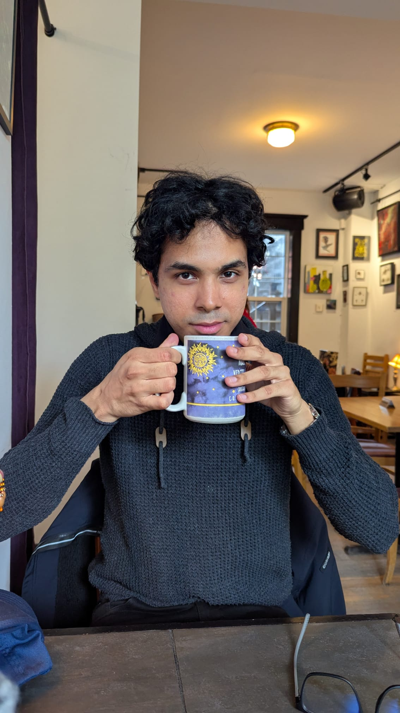

I'm a graduate in Biomedical and Life Sciences from the University of Ottawa, with a French Immersion specialization. Throughout my academic journey, I've developed a strong foundation in research, education, and community engagement. My studies have allowed me to dive into diverse fields such as molecular and cellular biology, botany, and machine learning applied to chemistry. I also complemented my training with business administration courses, giving me a well-rounded perspective on both science and its broader applications. Outside the classroom, I've volunteered in student wellness initiatives, taught neuroscience to elementary school students, tutored peers, and helped write science content for academic competitions. These experiences have strengthened my communication skills, adaptability, and sense of purpose. My research interests have led to a published study in Behavioural Flexibility(üîó) in collaboration with the University of Ottawa's neuroscience department, where I contributed to data analysis and interpretation. I'm often described as detail-oriented, curious, creative, and always eager to learn. I'm looking for opportunities where I can apply my scientific background and interpersonal skills, whether in education, administration, research, or public-facing roles. Outside of work, you'll find me reading, cooking, or sketching ideas in a notebook! ‚ò∫Ô∏è

I approach work with focus, adaptability, and great attention to detail. My training in life sciences, combined with my volunteer experience, has taught me to stay organized, communicate clearly, and excel in dynamic environments. I value collaboration and take pride in the support I provide to those around me, whether in a laboratory, office, or field setting. I remain calm under pressure, listen actively, and aim to create positive interactions in all contexts. Fueled by a passion for learning and science, I'm eager to share knowledge, solve problems, and contribute meaningfully wherever my skills can make a difference. I'm open to diverse opportunities where I can apply my scientific background and collaborative mindset.

Wellness Counselor | 2024-2025
üíö Impact: increased accessibility to support services

Scientific Question Writer | 2024
üìä Impact: pedagogical decisions guided by reliable data
Volunteer Speaker | 2024
ü߆ Impact: inspiring young people for STEM careers
Want to collaborate or learn more ? Contact me !
Write to Patrick

 

 Hello, I'm Patrick!
Hello, I'm Patrick!